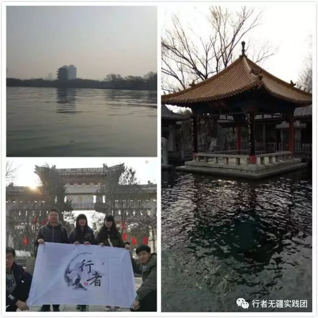
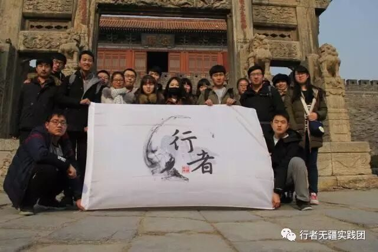
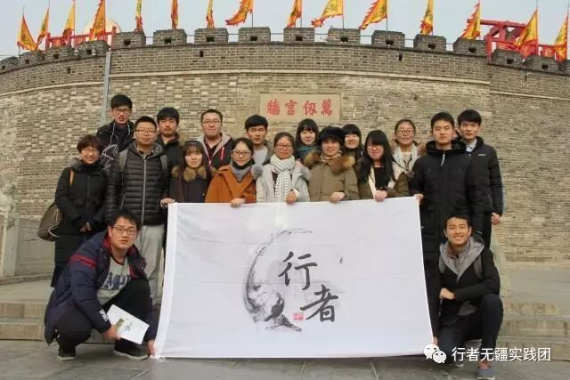

来自行者的第八封信|山东文化之旅
山东文化之旅
文：颜博文
在这次寒假之前，山东之与我仅仅是一个地名，在我脑海中的山东只是由来自于电视和书籍的支离破碎的信息所构成的残缺而又模糊的概念罢了。然而，经过这次山东的文化调研之旅，我脑海中的山东的形象变得真实而又丰满起来，我也第一次感受到了山东文化的厚重。
短短五天或许不能领略全齐鲁大地的千年文化底蕴，但仅仅是我所感受到的很小的一部分，就让我收获良多。在遍观济南泉城之灵秀、泰安重峦之雄奇、曲阜祠庙之古朴后，我发现山东文化不在别处，就寄托在这一方山水之中，寄托在这一方百姓人心之中。

济南之灵秀若为十分，则五分归于七十二名泉，三分归于千佛山，剩余两分归于大明湖。一泉、一山、一湖孕育了济南所独有的厚重而不失灵动的文化特色。城中的百泉争涌之美景令世人别称济南为泉城。连同千佛山、大明湖使济南获得了 “四面荷花三面柳，一城山色半城湖”的美誉。

泰安重峦之雄奇若为十分，则泰山独占八分。泰山之险峻足可气壮九州，势吞四方。古代的帝王将相、文人墨客无不对泰山推崇备至，这使得泰山成为了齐鲁文化的符号并且深深地烙印在了中国文化之中。只可惜行程仓促，无缘登泰山一览其壮丽景色，品味泰山所蕴含的五千年风云变迁之沧桑。

曲阜祠庙之古朴，首推的便是孔庙。孔庙之中每一处建筑，每一处石雕似乎都在诉说着自先圣逝去，人们对他的怀缅，对他思想的推崇。孔子其人虽去，其思未远，儒家思想贯穿古今，早已成为中国文化思想的一部分。自知或不自知，你我的血液里都或多或少的沉淀着儒家文化。


何为文化，我们很难对文化下一个精准的定义，每个人的心中对于文化的理解和解释都不尽相同。但我认为文化可以分为有形的和无形的。有形的文化是一方山水，一处处建筑，一本本书籍。它就在那里，每一个人都可以看到，触碰到。而无形文化是寄托在人们心中，是思维方式，是民风习俗，是由有形的文化所孕育但又不完全依托其而存在。
我们一路所调研的大多是有形的文化，而无形的文化少有涉及。无形的文化非居住于此数十年之久的人不能领略，这种对于文化的感悟却又往往只存在于个人的内心中，非一两次谈话所能领会。相较而言，有形的文化可能消存不定，但无形的文化却是根植于人们心中，百年而不易的。希望下次能想出办法，稍稍领略一下这无形的文化。